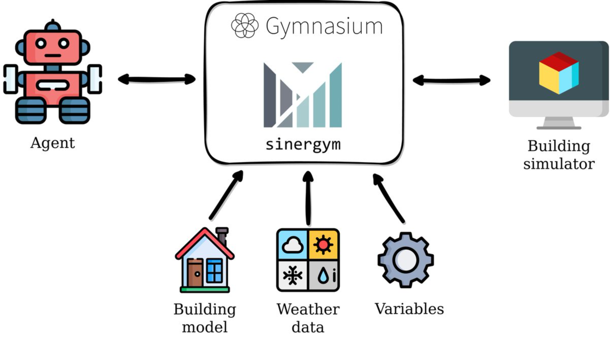

Sinergym provides a Gymnasium-based interface to interact with simulation engines such as EnergyPlus. This allows control in simulation time through custom controllers, including reinforcement learning (RL) agents.
{kind=link}


Note
Please, help us to improve Sinergym by reporting questions and issues here. Detailed information on how to report issues is available here.
Synergym includes the following features:
⚙️ Simulation engines compatibility. Sinergym is currently compatible with the EnergyPlus Python API for controller-building communication. Future updates may include additional engines such as OpenModelica.
📊 Benchmark environments. Similar to Atari or Mujoco, Sinergym allows the use of benchmarking environments to test and compare RL algorithms or custom control strategies.
🛠️ Custom experimentation. Sinergym enables effortless customization of experimental settings. Users can create their own environments or customize pre-configured ones within Sinergym. Select your preferred reward functions, wrappers, controllers, and more!
🏠 Automatic building model adaptation. Automatic adaptation of building models to align with user-defined settings.
🪛 Automatic actuator control. Seamless management of building actuators via the Gymnasium interface. Users only need to specify actuator names, and Sinergym will do the rest.
🤖 Stable Baselines 3 integration. Sinergym is highly integrated with Stable Baselines 3 algorithms, wrappers and callbacks.
✅ Controller-agnostic. Any controller compatible with the Gymnasium interface can be integrated with Sinergym.
☁️ Google Cloud execution. Support for easy Google Cloud execution.
📈 Weights and Biases logging. Automate the logging of training and evaluation data, and record your models in the cloud. Sinergym facilitates reproducibility and cloud data storage through Weights and Biases integration.
📒 Notebook examples. Learn how to get the most out of Sinergym through our Jupyter notebooks.
📚 Extensive documentation, unit tests, and GitHub actions workflows. Sinergym follows proper development practices facilitating community contributions.